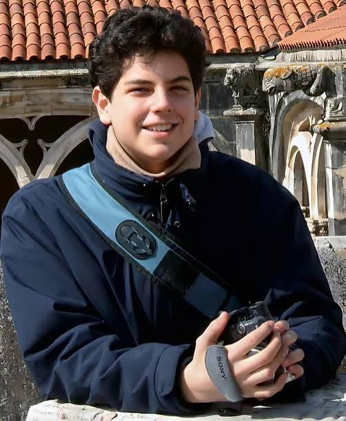

Evangelizando jovens para Cristo, pela intercessão da Virgem Maria.
Conheça nossa missãoA Jovens Pela Cruz nasceu com o desejo de aproximar os jovens de Jesus Cristo através da oração, da formação, da amizade e da vivência da fé. Nossa missão é conduzir cada jovem a descobrir que a verdadeira felicidade está em Deus.
Saiba maisColocar Jesus como fundamento da nossa vida, buscando crescer na fé e no amor.
Incentivar uma juventude que reza, participa da Igreja e caminha com Deus.
Formar amizades verdadeiras baseadas na fé e no desejo de alcançar a santidade.
Jovens que entregaram suas vidas a Cristo e mostram que a santidade também é possível nos dias de hoje.


Carmelita francesa, Doutora da Igreja e Padroeira das Missões
ConhecerAcompanhe o Evangelho do dia, reflexões, santos celebrados e conteúdos para viver melhor a sua caminhada cristã.
Acessar LiturgiaMomentos de oração, formação e convivência entre jovens.
Adoração, terços e encontros para fortalecer a espiritualidade.
Confira a agenda completa e participe conosco.
Conheça aqueles que dedicam seu tempo, seus dons e sua caminhada para levar Cristo a mais jovens.
Conhecer EquipeEntre em contato conosco, acompanhe nossas redes sociais e venha caminhar junto com a Juventude Pela Cruz.
Você não possui novidades no momento.
Salve Maria! Seja bem-vindo à JPC.
Aqui você encontra conteúdos para fortalecer sua caminhada com Cristo: